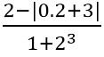
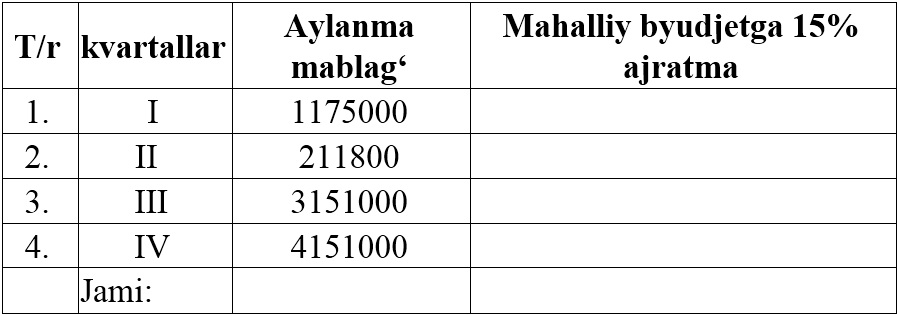
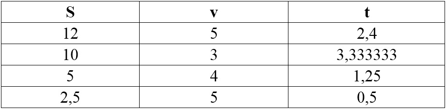

1. MS Excel da doirani yuzasini hisoblang.
2. ni hisoblang.
3. Y=sin2x funksiyani grafigini hosil qiling.
4. Quyidagi jadvaldagi sonlarning 15% hisoblang.

5.Tezlikni yo‘l va vaqtga nisbatini hisoblang va uning grafigini hosil qiling.
